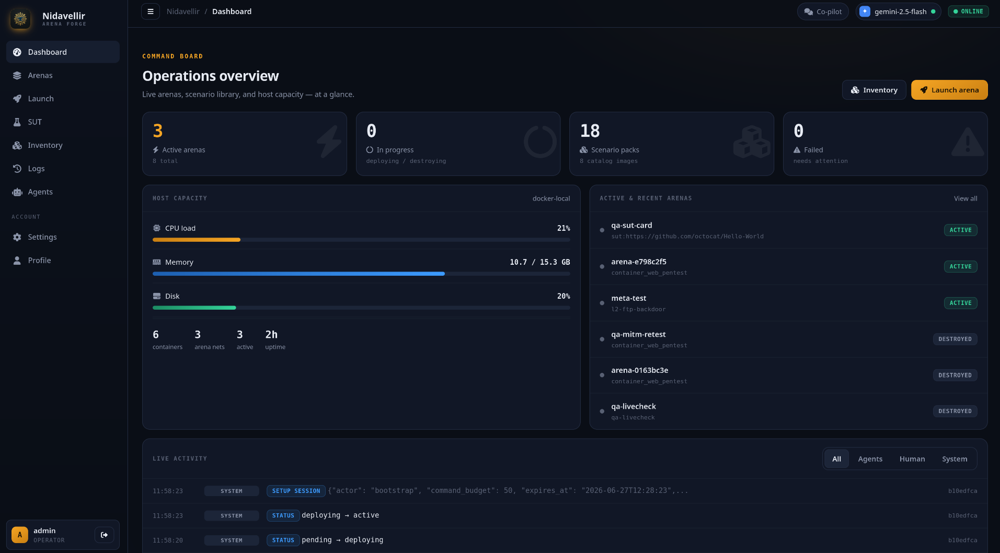
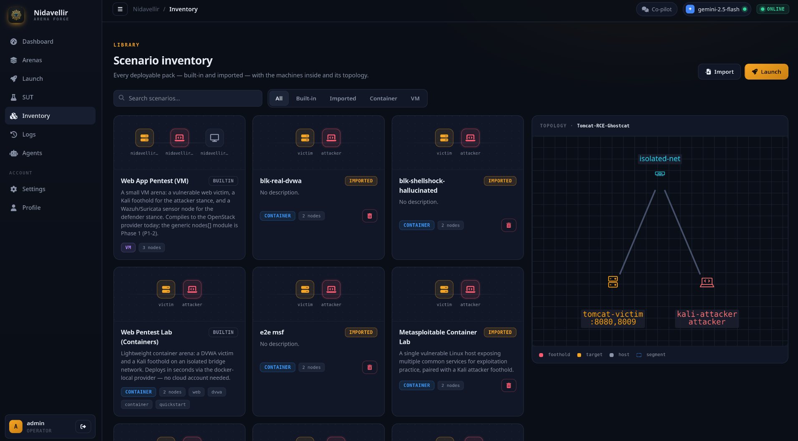
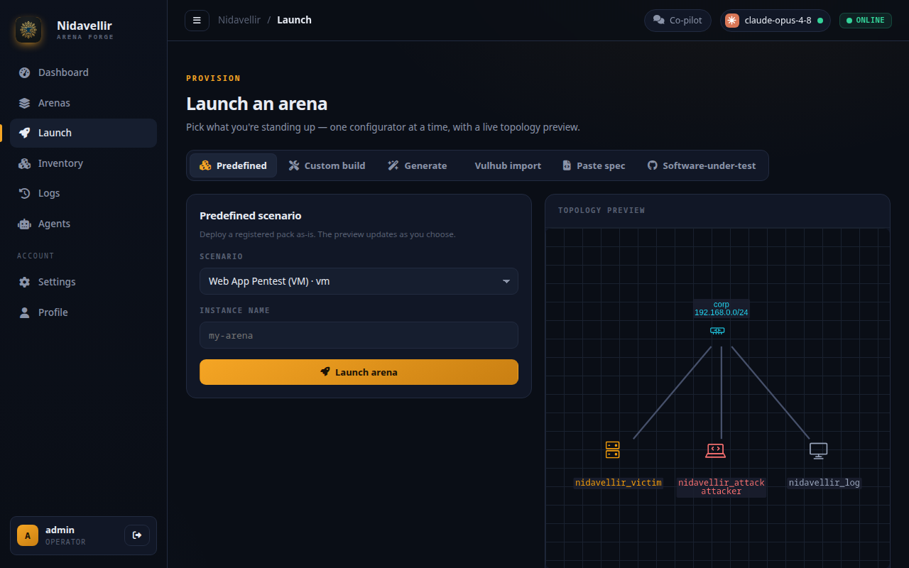
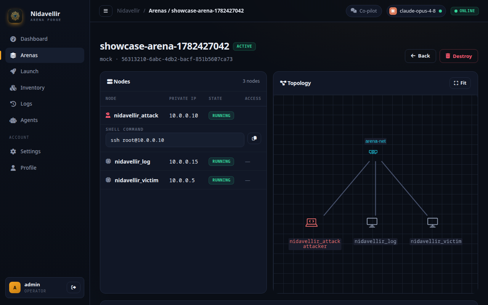

An arena for testing AI security agents
Point Nidavellir at a repository. It stands the service up in a contained arena, connects a bring-your-own AI agent over an MCP gateway, and records every action to an append-only audit trace. It runs fully local on Docker, with no cloud account required.
How it works
One end-to-end loop, running fully local: point at a repo, contain it, connect an agent, score the result.
at any repo
Give it a public repository (or paste a spec, or import a Vulhub CVE env). Repo-introspection plus a deterministic-first build pipeline stand up a healthy, version-pinned service.
Shipped · M1in a sealed arena
Nodes run on egress-locked network segments; a CI test proves they can't reach the internet or cloud metadata. Generated infrastructure is never auto-deployed unreviewed.
Shippedwith your agent
Your agent connects over an MCP gateway as attacker, MITM, or defender. Every action is scope-enforced, budget-metered, key↔arena-bound, with an operator kill-switch and a full JSONL trace.
Shippedon real evidence
A monitor and crash oracle turn crashes, sanitizer aborts, and programmatically-confirmed findings into a structured, replayable verdict, scorable even with no known-CVE list — with an operator confirm/refute path for the findings a validator can't auto-prove.
Shipped · M2System Screenshots
Explore the console dashboard, live machine capacity metrics, and scenario inventory pages.

[ dashboard.png ]Console Dashboard Fleet Live
Track running scenarios, agent instances, worker capacity metrics, and stream real-time orchestration events.

[ inventory.png ]Scenario Inventory Topology
View pre-configured vulnerability maps, topology scopes, segments, nodes, and available network access zones.

[ launch.png ]Deployment Controller Deploy
Configure provider instances (docker-local, AWS, OpenStack), input parameters, wire specific stances, and launch targets.

[ arena.png ]Arena Control Live
Monitor specific arena details, interact with running instances, and review network segment routing.
Three Architectural Pillars
Nidavellir is engineered around modularity, security containment, and deep telemetry integration.
Dynamic Topologies
Author scenarios inside data-defined YAML templates. Topologies compile on-demand to Docker local engines, local QEMU/Libvirt VMs, OpenStack, or AWS instances using dynamic provider drivers. Supports arbitrary N-node segment setups.
MCP Agent Gateways
Secure and regulate Model Context Protocol (MCP) clients. Every action runs through gateway sandboxes enforcing stance capabilities, per-arena key↔arena bindings, an operator kill-switch, and logging to append-only audit traces.
Zero-to-Prompt Compile
Translate plain text descriptions into operational YAML topology schemas using large language models. Validates generated specifications against strict schemas before exposing infrastructure.
System Architecture
Nidavellir coordinates components to maintain isolated ranges and expose them safely to AI agents.
Modular Decoupled Subsystems
The Flask web console communicates with the FastAPI orchestrator via REST API calls. Tasks are queued inside Redis and dispatched to Celery workers, which handle Docker container builds, AWS AMI deployment, or OpenStack VM configuration. External AI agents connect exclusively through the gateway system which isolates network requests.
Who it's for
A bring-your-own-agent, contained, reproducible harness fits several kinds of work.
A harness for your own agent
Test, eval, and regression-check the security agent you're building, so you can see how a build performs across versions on targets you choose.
Evaluate agents on your code
Run an AI security agent against your own codebases in a contained arena, with a full audit trail. The platform ships no agent of its own, so the results stay yours.
Reproducible cyber evals
Cyber-offense evals with exportable traces in OpenTelemetry-GenAI and OpenInference shape, ready to flow into Langfuse, Phoenix, or Braintrust.
Contained, scored pentests
Point an agent at internal or open-source software and let it work, safely boxed and scored. A human can drive any arena too, with no model in the loop.
Built on the state of the art
Nidavellir adopts the field's best practice instead of reinventing it. Every design choice traces to published work.
Development Roadmap
Two horizons: a personal open-source flagship that proves the thesis, graduating into an enterprise's internal harness for testing the agents they build.
The Substrate & Three Pillars
The production control plane plus all three pillars: the v3 dynamic topology engine and docker-local compiler (egress-locked container ranges in seconds); the MCP agent gateway with attacker / MITM / defender / configurator stances, server-enforced per-arena key↔arena bindings, an operator kill-switch, and an append-only audit trace; and zero-to-prompt scenario generation with the software-under-test wizard and the operator co-pilot.
Reliable Repo-to-Service Provisioning
Point Nidavellir at any repo and get a healthy, version-pinned service. A repo-introspection step grounds the build so it stops guessing; the pipeline honors an existing Dockerfile, falls back to verified LLM Dockerfile synthesis with a build-and-rollback loop, and can install a named package. Every image is pinned, arena-labeled, and reclaimed.
Deep Monitoring, Crash Oracle & Scoring
A monitor and crash oracle turn crashes, sanitizer aborts, and unhandled 5xx into scored evidence, so a target with no known-CVE list is still scorable. Deterministic validators confirm each finding before it counts, and a structured, machine-parseable Score — benchmark or discovery mode, with a milestone Progress Rate that scores even a failed run — replaces win/lose scoring. The moat.
Benchmark, Eval Layer & the Flagship Proof
Every run becomes a comparable, replayable benchmark with model, scaffold, cost, and pass@k reported together. The engine has landed: an eval-export that projects each run to a Langfuse/Phoenix-ready dataset row, OpenInference-aligned traces, and a bring-your-own reference harness that plays an arena autonomously, scales across a suite, and replays deterministically. Proof in hand: a bring-your-own Claude Code agent, over the MCP gateway against a live container arena, found and confirmed 11 real vulnerabilities into one scored, matched verdict — plus an operator confirm/refute path for the findings a validator can't auto-prove. Remaining: the polished, recorded demo cut.
Agent-Grade Arena Tooling & Fail-Closed Guardrails
The tools a serious offensive agent needs, as first-class MCP schemas: a headless browser (doubling as the XSS validator), a code-exec sandbox for PoCs, an HTTP intercept proxy, file transfer, and SSH tunnelling, plus durable, fail-closed budgets and a two-scope kill-switch. This addresses whether the tooling is enough for a real agent to do real work.
Regression & Eval Pipeline
Run agent version N against N+1 on the same pinned arena suite and get a diffable report of score deltas, new regressions, and cost per arena. One-click export of any run into Langfuse, Phoenix, or Braintrust, with deterministic replay at scale. Designed to run every time the agent changes.
LLM-Application Targets
A new arena archetype where the victim is an LLM application, with packs mapped to the OWASP Top 10 for LLM and Agentic Applications: prompt injection, system-prompt leakage, excessive agency, and RAG attacks, each scored from the app's own logs. Directly relevant to testing the agentic products an enterprise builds.
Product & Multi-Tenant Concerns
MCP OAuth 2.1, multi-tenant RBAC / SSO / workspaces, real cloud and VM hosting, in-browser VNC access, and purple-team detection scoring are deliberately cut, since none are needed for a personal flagship or a single-team harness. They return only if Nidavellir becomes a product or serves multiple teams.
Fetching documentation manifest...